Aalten
Hoekstraat 6
7122 CH Aalten
| Maandag | Gesloten |
|---|---|
| Dinsdag tot en met vrijdag | 8:00 tot 17:30 |
| Zaterdag | 7:30 tot 16:00 |
| Zondag | Gesloten |
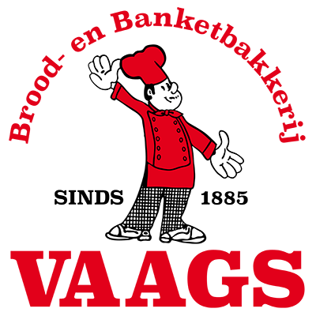
Brood- en banketbakkerij in Aalten en Winterswijk
Ambachtelijk brood, gebak en vlaaien van Vaags, sinds 1885. Vandaag besteld voor 17:30 uur, morgen in de winkel of bij u thuis.
4,6 sterren uit 60 Google-reviews
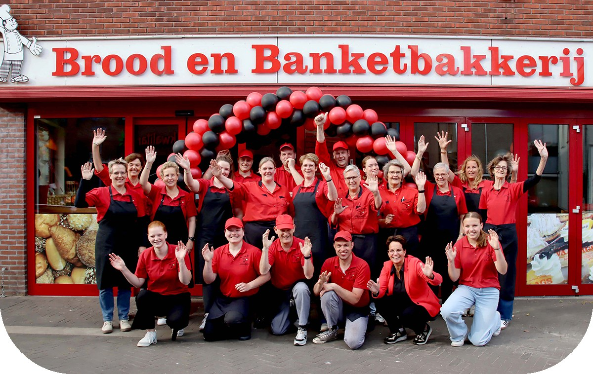
In de manden liggen onze natuurdesems: robuust, spelt met zonnepit en vruchten. Daarnaast witte bollen en de Achterhoekse speltvruchtenslof, gevuld met cranberries, amandelen en rozijnen.
“Een ouderwetse warme bakker. Die moet je koesteren. Het brood is dan ook elke dag kraakvers en gewoon erg lekker. Een aanrader zijn de gevulde koeken, in klein en groot formaat te krijgen.”
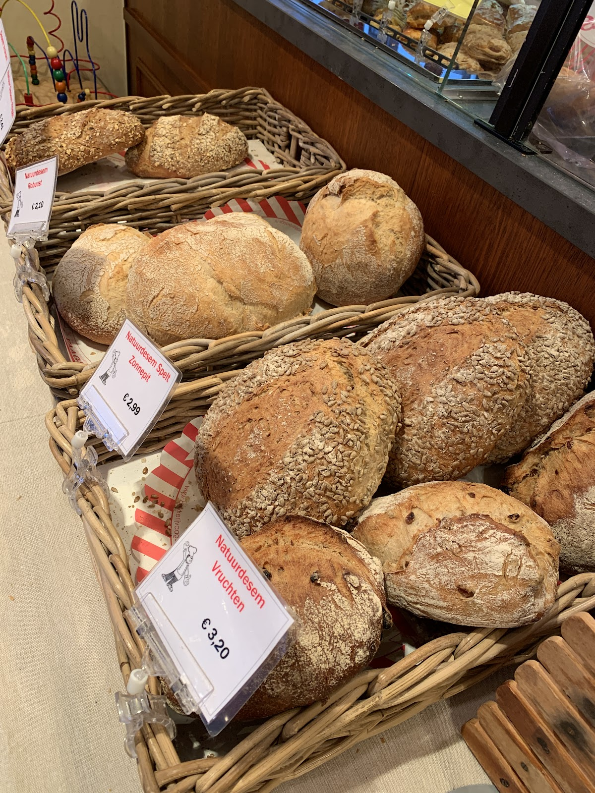
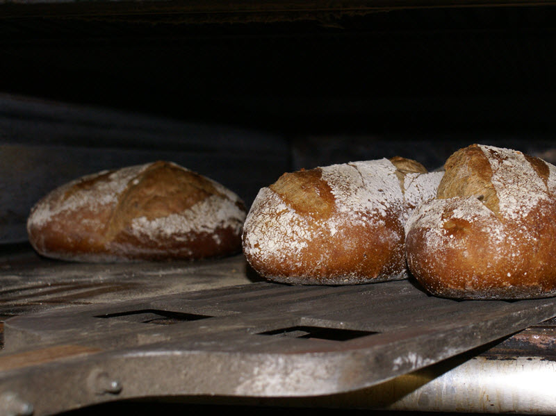
Punten, schelpen, lepelgebak en vlaaien, de punten netjes in het Vaags-papier.
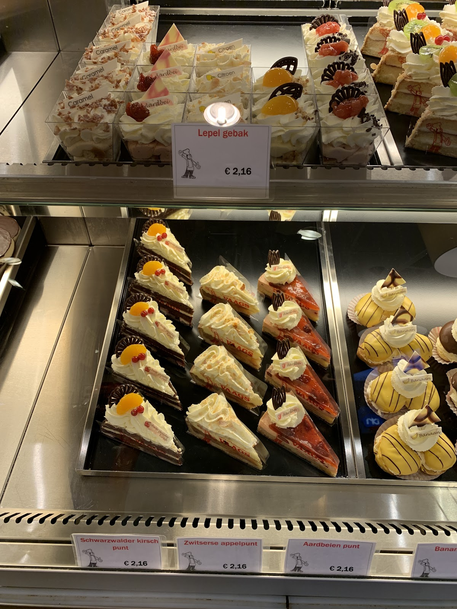
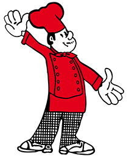
Schwarzwalder kirsch punt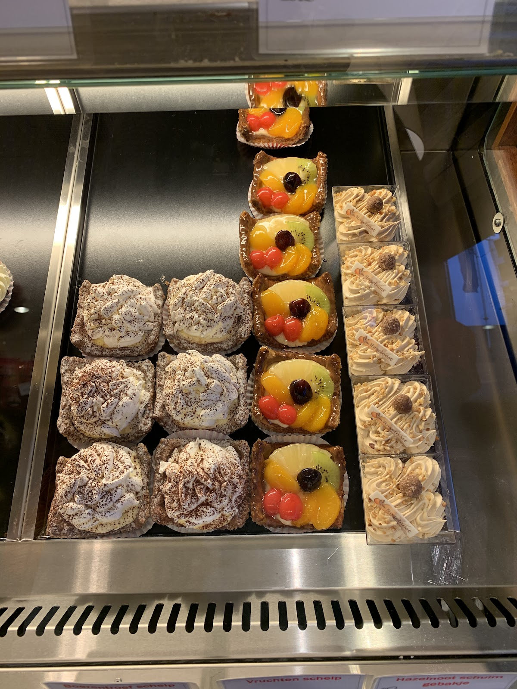
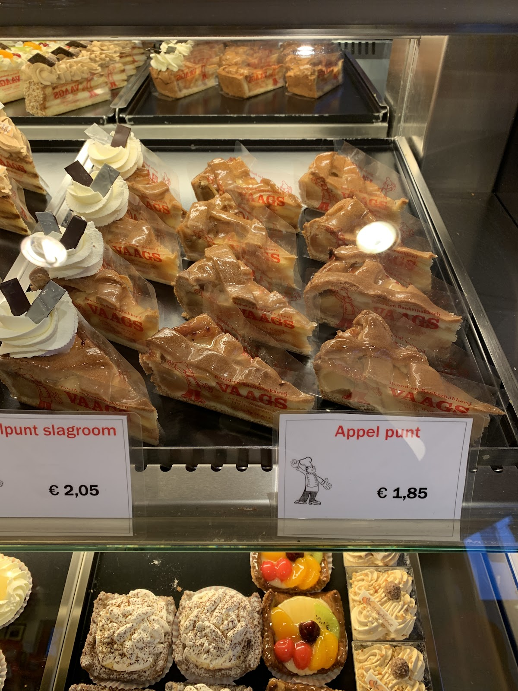
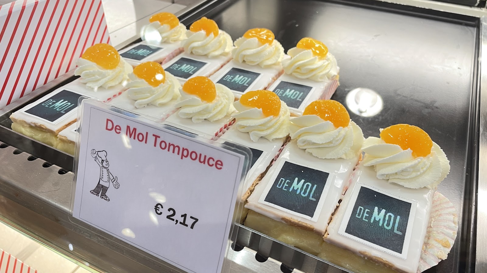
Vertel ons voor hoeveel personen het is, dan denken we graag met u mee.
Bel over uw taart“Voor een speciale gelegenheid taart besteld
Er werd meegedacht wat heel fijn was want waren best een grote taart nodig. Werd gezegd waarom niet 2 x 15 personen aan taart. Heel fijn dat er meegedacht werd. En wat was t lekker en supervers!!!! Zelfs de overgebleven stukken waren nog kakelvers.”
Voor de kerstdagen vindt u ons op de parkeerplaats bij de winkel in Aalten, met verse oliebollen en appelbeignets om mee te nemen.
5 + 1 gratis
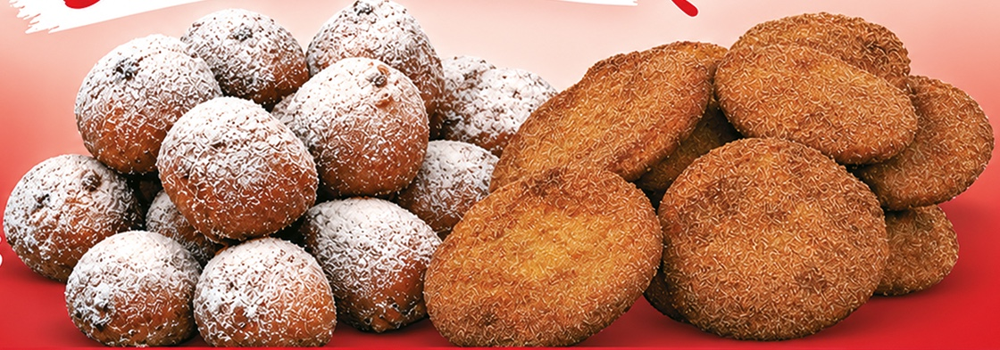
17:30
Via de webshop, voor de volgende werkdag. Betalen gaat veilig met iDeal of bij de bezorging. Voor vandaag nog iets nodig? Bel de winkel, dan kijken we wat er kan.
Altijd mogelijk, in Aalten of Winterswijk. U kiest de winkel tijdens het bestellen.
’s Ochtends tussen 9:00 en 13:00 uur, vanaf € 25,-. De bezorgkosten hangen af van de afstand en ziet u bij het bestellen.
| Aalten | 7120, 7121, 7122, 7123 |
|---|---|
| Winterswijk | 7100, 7101, 7102, 7103 |
| Winterswijk buurtschappen | 7104 tot en met 7109, 7113, 7115, 7119 |
| Bredevoort | 7126 |
Staat uw postcode er niet bij? Neem gerust contact op.
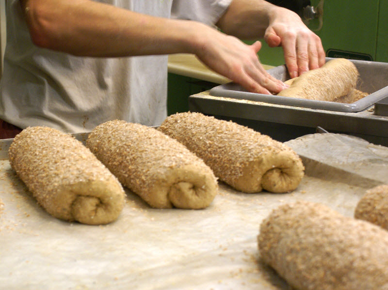
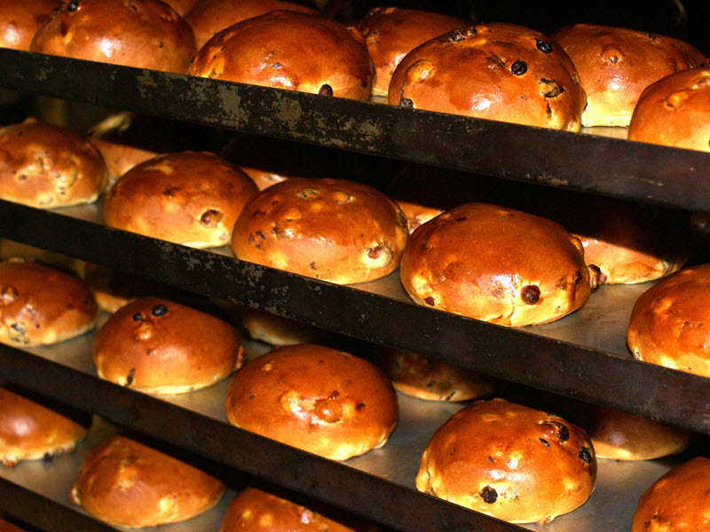
Samen met de bakkers Ebbers uit Terborg en Kaspers uit Doetinchem, Wehl en Zeddam vormt Vaags de Achterhoekse Bakkers. We bakken “net as vrogger” met oergranen: khorasan, rogge, emmer en rode tarwe.
Het graan teelt Jan Steverink, grenzend aan de Oude IJssel. Het wordt gemalen op korenmolen De Vier Winden in Vragender. Daar bakken we het oergranen koekje van, met de Achterhoekse vlag erop gedrukt. Ook de Achterhoekkoek en de speltvruchtenslof komen uit deze samenwerking.
Meer op achterhoeksebakkers.nlBij iedere € 4,00 krijgt u 1 spaarpunt. De punten staan standaard op uw kassabon, dus u hoeft niets bij te houden.
Vlaai, taart en hazelnootschuimtaartje graag 1 dag van tevoren bestellen.
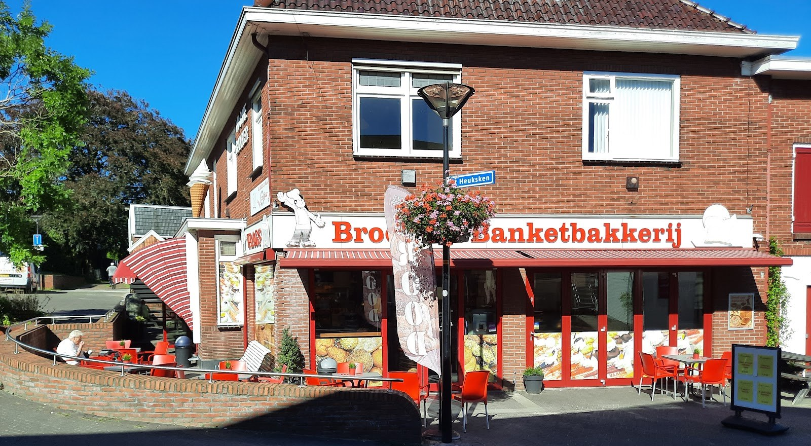
“Heerlijk koffie met gebak.”
Hoekstraat 6
7122 CH Aalten
| Maandag | Gesloten |
|---|---|
| Dinsdag tot en met vrijdag | 8:00 tot 17:30 |
| Zaterdag | 7:30 tot 16:00 |
| Zondag | Gesloten |
Weurden 17-1
7101 NG Winterswijk
| Maandag | Gesloten |
|---|---|
| Dinsdag tot en met vrijdag | 8:30 tot 17:00 |
| Zaterdag | 8:00 tot 16:00 |
Wil je deel uitmaken van ons team? Stuur een mail, dan horen we graag van je.
info@bakkerijvaags.nl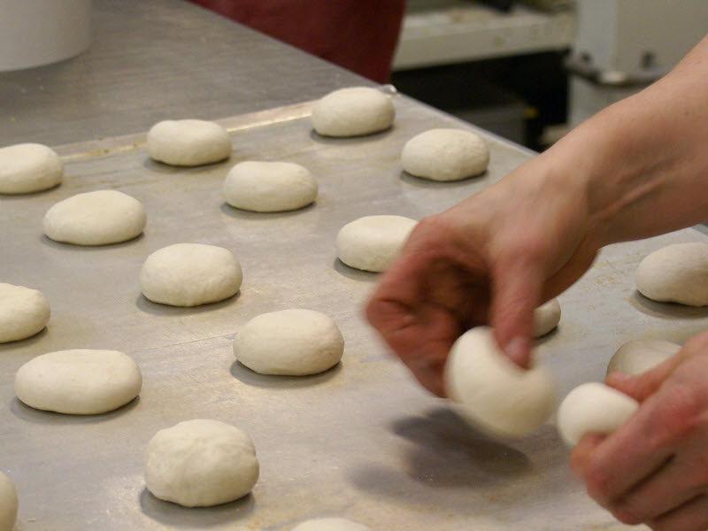